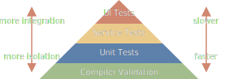

Leveraging types for better APIs
Modules and interfaces
Well-designed computational systems, like well-designed automobiles or nuclear reactors, are designed in a modular manner, so that the parts can be constructed, replaced, and debugged separately.
Software is built by breaking a complex problem down into smaller modules that each solve a simpler problem. We can further break down a module we just created into ever smaller parts until we have something simple enough to work with.
All of these modules then have to be connected to each other to solve our original, more complex problem. Connecting these modules together can in itself become a difficult problem — especially as the number of modules increases.
The key to managing the complexity that arises from connecting modules together is having well-defined interfaces. A well-defined interface is typed in such a way that we can rely on compilers to ensure that we respect the interfaces that we use.
When modules are written in the same programming language, the typing information for the interfaces is usually already in place. Often though, modules are written in different languages or are written by different organizations and so the typing information is missing. Adding typing formation to those interfaces presents a great opportunity to improve the software we write.
We often overlook the quantity errors that can be caught by the compiler when it has good type information. There are surprisingly few typing techniques that we need to avoid many common errors. With these techniques, compiler validation becomes the most powerful tool for catching errors.
The traditional test automation pyramid1 has unit tests as a foundation but it might be better to place compiler validation bellow unit tests. Unit tests validate that assertions given by the tests hold true — compilers are able to validate that assertions given by the types hold true. Here's what our updated test automation pyramid can look like.

With this in mind, the questions becomes
What type information can we give the compiler to help us catch errors, especially, around our interfaces?
Static type checking
Code never lies, comments sometimes do.
— Ron Jeffries
The most basic type contract is being able to specify what type of value
you expect to find in a variable. Most programming languages have static
typing built-in but server requests often lack typing information — the
data is often untyped json or xml.
To show an example of typing at work, we can use Typescript with simple functions as our interface. Typescript lets us easily compare a typed function and an untyped equivalent to highlight errors that typing can prevent. Even though a function is used here, it's important to remember that this also applies to the interfaces between our modules.
function typed_sum(a: number, b: number): number {
return a + b;
}
/**
* Well intentioned comments.
*
* @param a is a number
* @param b is a number
*
* @returns a number
*/
function untyped_sum(a, b) {
return a + b;
}
// Behaviour that is hard to predict, potential bugs
untyped_sum("1", "2"); // → "12"
// A compiler error
typed_sum("1", "2");
Null safety
I call it my billion-dollar mistake. It was the invention of the null reference in 1965… This has led to innumerable errors, vulnerabilities, and system crashes, which have probably caused a billion dollars of pain and damage in the last forty years.
— Tony Hoare
Null references have been around for a long time but null safety has resurfaced in the last 10 years2. The concept is simple, you have to indicate when a value can be missing. The alternative — any value can be missing without warning — sounds crazy but it's been a standard part of many programming languages for so long that we've developed Stockholm syndrome.
Using a value as if it was there when it isn't leads to crashes or unexpected behaviour. With null safety, when a value is potentially missing, the compiler can make sure we do a null check before the value can be used.
It's incredible to see how many errors disappear with this simple change. This is especially true across interfaces, the errors are usually harder to diagnose and resolve because of the extra distance between the two pieces of code.
Once again, Typescript lets us illustrate both sides of the coin in the same program using functions.
function nullsafe_sum(a: number, b: number): number {
return a + b;
}
function untyped_sum(a, b) {
return a + b;
}
// Behaviour that is hard to predict, potential bugs
untyped_sum(5, null); // → 5
untyped_sum(5, undefined); // → NaN (Not a Number)
// Caught by the compiler
nullsafe_sum(5, null); // Compiler error
nullsafe_sum(5, undefined); // Compiler error
Tagged unions
The best way to eliminate exception handling complexity is to define your APIs so that there are no exceptions to handle: define errors out of existence.
— A Philosophy of Software Design
Just like null safety, tagged unions aren't a new concept3 but are becoming a standard part of many new programming languages4.
Tagged unions allow us to create data structures that better fit our use cases. They do this by being able to represent a choice as data. Each choice has its own associated data.
When used correctly, the ability to represent a choice makes inconsistent states impossible to represent. It's surprising how many errors ultimately boil down to ambiguous states.
State with tagged unions
The simplest choice we can represent is true or false. This is often
useful when we want to represent the return value of a function that can
fail. The successful case is mapped to true and we
associate the normal result of the function with it. The error case is
mapped to false and we associate an error message with it.
This sounds more complex than it is, hopefully another Typescript example can clear things up.
interface Result {
tag: 'result';
value: number;
}
interface Error {
tag: 'error';
message: string;
}
function divide(a: number, b: number): Result | Error {
if (b === 0) {
return {
tag: 'error',
message: "Can't divide by 0",
};
}
return {
tag: 'result',
value: a / b,
};
}
This might look a lot like exceptions but there are two key differences.
- Exceptions modify a program's control flow which makes it hard to transfer across to another process or program.
- Tagged unions combine with other data types, we can have a list of results or errors.
The example above is the simplest case where there are only two states — tagged unions work for more than just two states.
Let's say we have a device that start out as offline. It then connects to our server and downloads docker images as part of an initializing phase. Once those images are booted up and sending us sensor data, the device is considered online. We can model that with the diagram below
If we had to represent this without tagged unions, we might combine all
the different states into one bigger data structure and have
null for the parts that don't make sense in the current
state.
interface Device {
status: 'offline' | 'initializing' | 'online';
ip: string | null;
progress: number | null;
sensorData: SensorData | null;
}
With this approach, knowing which fields have meaningful values based on
the current status is implicit information. When programs
get big and there are many interfaces, this quickly becomes extremely
complex.
Another shortcoming of this approach is that it's possible to have
states that don't make any sense, what does it mean when an
offline device that has an ip?
Tagged unions solve both of these problems as can be seen bellow
interface OfflineDevice {
status: 'offline';
}
interface InitializingDevice {
status: 'initializing';
ip: string;
progress: number;
}
interface OnlineDevice {
status: 'online';
ip: string;
sensorData: SensorData;
}
type Device = OfflineDevice | InitializingDevice | OnlineDevice;
Another approach without tagged unions would be to use the same data structures as nullable.
interface Device {
offline: OfflineDevice | null;
initializing: InitializingDevice | null;
online: OnlineDevice | null;
}
This approach still leaves us with the possibility of having a contradicting state that doesn't make sense. What do you do with a device if every field is null or if all three have values?
Lists with tagged unions
Tagged unions are also useful to represent a list of different types. Many programming languages use inheritance to model such a list but, just like exceptions, inheritance acts on a program's control flow. Whenever we are interacting with the control flow, crossing the process boundary and combining with other typing concepts becomes difficult.
Let's say a connected devices can be robots, sensors or servers — each with their own associated information.
With tagged unions, we can have a list that combines multiple types.
const devices = (Robot | Sensor | Server)[];
Without tagged unions, we could fall back to having multiple lists — one per type. The downside of this approach is that the sorting information is lost as one list is decoupled into three.
const robots = Robot[];
const sensors = Sensor[];
const servers = Server[];
Conclusion
A modern type system, offering static types, null safety and tagged unions is a powerful tool that enables the compiler to catch many errors with little effort. Interfaces are one of the most important places to apply typing as that can serve as a contract between modules that is enforced by the compiler.
When we don't have static type checking, we rely on informal agreements:
- comments,
- documentation,
- meeting notes,
- best practices,
- hopeful optimism,
- …
What all these have in common is that they rely on developers to ensure everything fits and when we don't respect the agreements, we get run-time crashes or unexpected behaviour.
These agreements are usually respected at first but start to break as the program grows and evolves. This is especially painful for interfaces where it's harder to make sure that both sides of the interface evolve in the same way.
Footnotes
-
Test Automation Pyramid — Succeeding with Agile (Mike Cohn) ↩
-
A few languages with null safety Typescript, Rust, Kotlin, Swift. ↩
-
Early languages implementing tagged unions ALGOL 68, ML, Pascal, Ada, Modula-2, Haskell. ↩
-
New languages implementing tagged unions Rust, Swift, Scala, Typescript, Kotlin, Python 3.9+. ↩